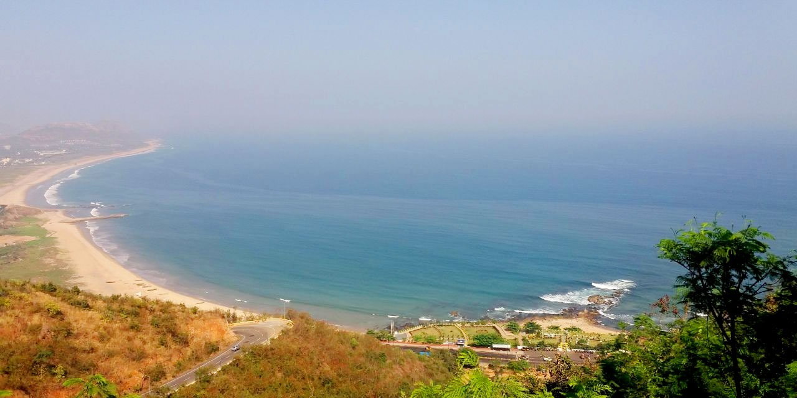

RK Beach
RK Beach, also known as Ramakrishna Beach, is one of the most popular beaches in Vizag. It is known for its scenic beauty, golden sands, and serene environment. The beach is a favorite spot for locals and tourists alike for morning walks, picnics, and relaxation.
Location: Visakhapatnam, Andhra Pradesh, India
Activities: Swimming, picnicking, beach walks, photography
Transportation: Easily accessible by road, located near major bus routes and the Vizag railway station.